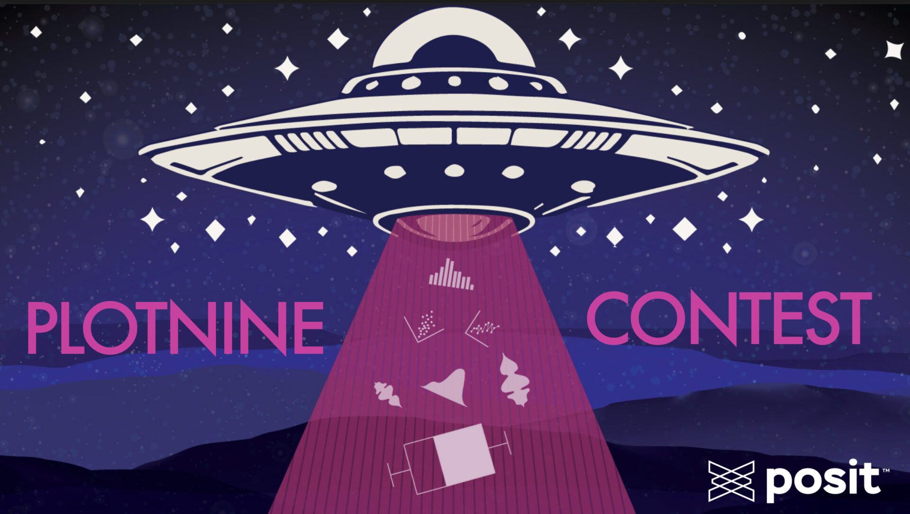
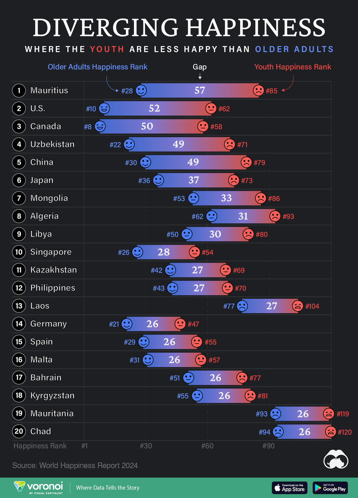

import requests
import pandas as pd
from io import StringIO
url = "https://www.visualcapitalist.com/countries-with-biggest-happiness-gaps-between-generations/"
headers = {'User-Agent': 'Mozilla/5.0 (Macintosh; Intel Mac OS X 10_11_5) AppleWebKit/537.36 (KHTML, like Gecko) Chrome/50.0.2661.102 Safari/537.36'}
response = requests.get(url, headers=headers)
html = response.content.decode()
data = pd.read_html(StringIO(html),attrs={"id": "tablepress-4104"})[0]
data["Country"] = data["Country"].str[3:] # remove the country alias1. Motivation 🔥
I’ve heard for a while that there is a package called plotnine, which is an implementation of the grammar of graphics in Python based on ggplot2, but have not had a chance to practice yet. The Plotnine Contest shared by Christoph Scheuch and Rami Krispin motivated me to attend this challenge.

2. My Submission 🚴♂️
The initial idea is to re-create/enhance this Dumbell chart from Visual Capitalist.

2.1. Getting the data
2.2. Plotting
TBU